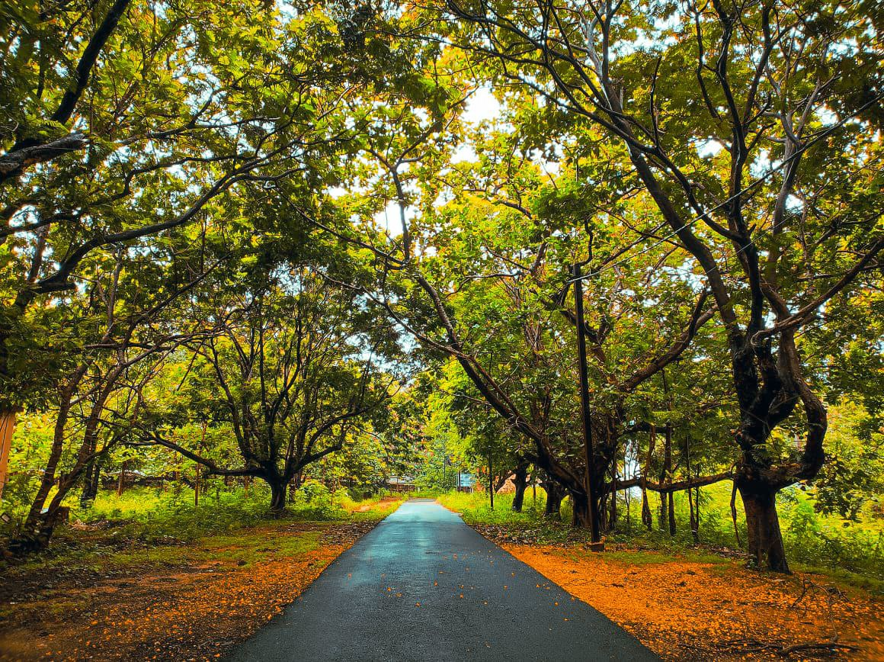
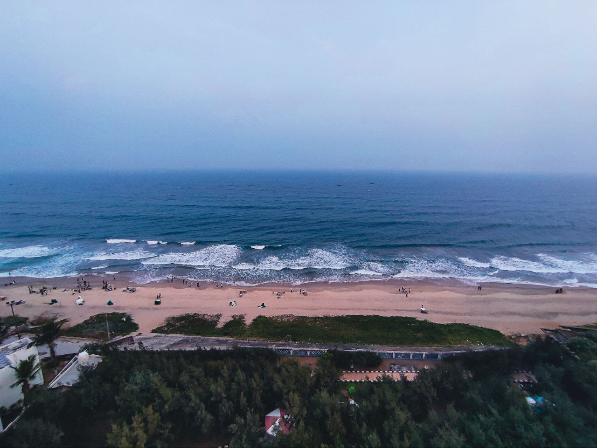
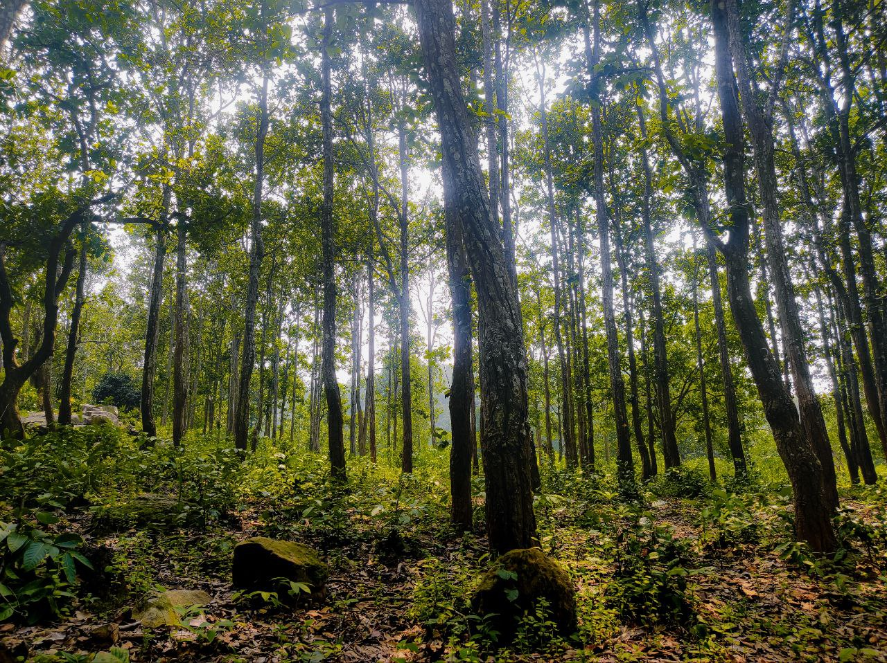
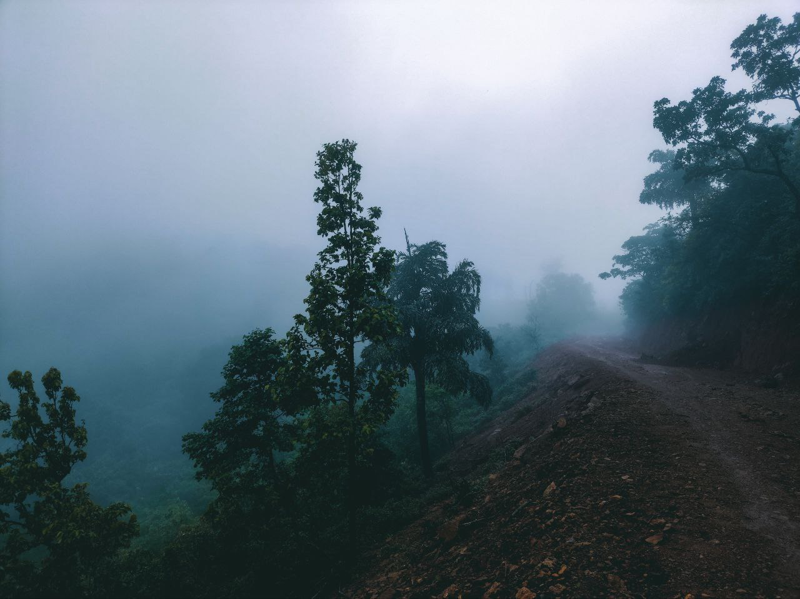
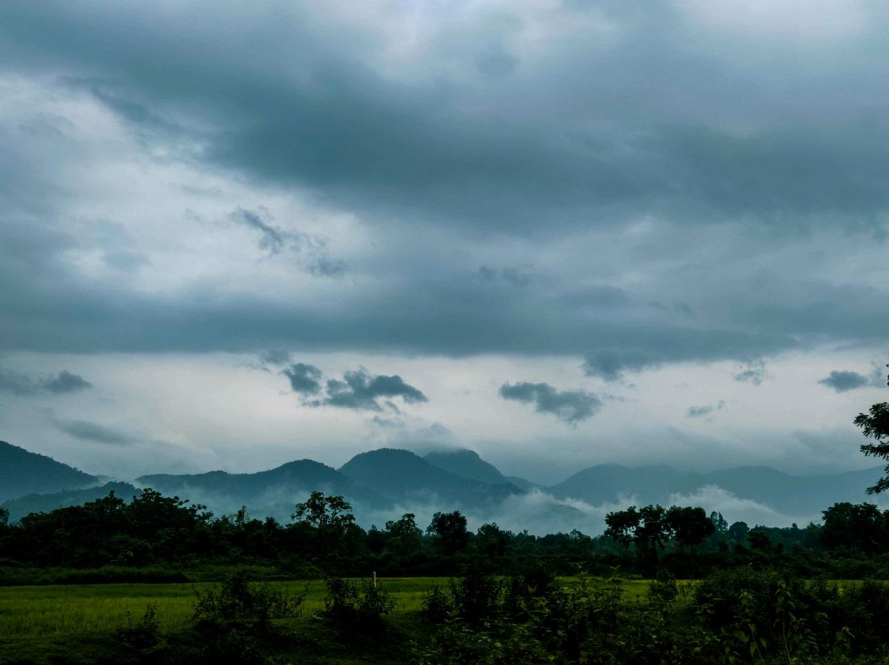

A tranquil scene of a bridge shrouded in mist, captured at dawn. The soft light and ethereal atmosphere create a sense of peace and serenity.

SUNDOWN STUDIO
Autumn Road Serenity
Seasonal Beauty
A tranquil road stretches into the distance, framed by a lush canopy of trees. Sunlight filters through the leaves, casting a warm glow on the asphalt and the fallen autumn leaves that line the path.

SUNDOWN STUDIO
Wide Ocean View
Twilight Scenes
An expansive aerial view captures the tranquility of the beach at dusk. Gentle waves roll onto the sandy shore, while small figures dot the coastline, enjoying the serene atmosphere. The dark blue ocean stretches to the horizon, meeting a soft, overcast sky.

SUNDOWN STUDIO
Enchanted Woods
Forest Landscapes
A serene forest scene captures the tranquility of nature. Tall, slender trees reach towards the sky, their leaves filtering the sunlight. The forest floor is dappled with light and shadow, with moss-covered rocks and lush undergrowth adding to the natural beauty.

SUNDOWN STUDIO
Misty Mountain Path
Mountain Landscapes
A winding mountain road disappears into the swirling mist, creating an atmosphere of mystery and solitude. The dense fog obscures the surrounding landscape, leaving only the silhouettes of trees and the rough texture of the road visible. The scene evokes a sense of adventure and the allure of hidden places.

SUNDOWN STUDIO
Dramatic Cloudscape
Cloud Photography
A dramatic cloudscape dominates the scene, with dark, textured clouds hanging low over distant mountain peaks. The layers of fog and mist create a sense of depth and mystery, while the lush greenery in the foreground provides a stark contrast to the stormy sky. The scene evokes a feeling of awe and the power of nature.